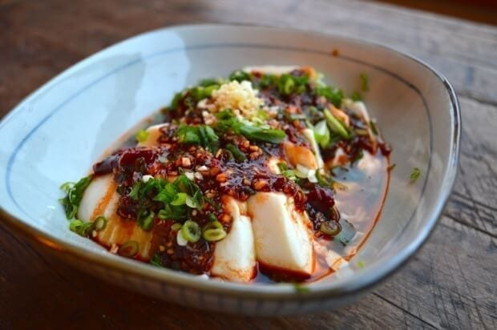

cold spicy tofu

Description
This spicy and garlicky tofu dish only takes a few minutes to prepare, and is sure to be
devoured just as quickly. The shining star of the dish is the douban jiang, or
spicy bean paste, that sparks the tastebuds. It is easily found in most Asian markets.
Add a drizzle of homemade chili oil at the end for an extra kick!
This recipe is originally found at The Woks of Life.
Ingredients
- 1 tablespoon soy sauce
- 1 tablespoon douban jiang (spicy bean paste)
- 1 teaspoon sesame oil
- 1/2 teaspoon sugar
- 2 cloves garlic, minced
- 2 tablespoon scallion, chopped
- 1 pound silken tofu
- 1 tablespoon chopped cilantro or Thai basil (optional)
Steps
- Put the soy sauce, bean paste, sesame oil, and sugar in a small bowl.
Add half the garlic and half the scallions. Mix it all together.
- Carefully remove the silken tofu from the package. First, slice the
plastic around the block of tofu, and then use a paring knife to separate
the tofu from the sides of the box. Then turn it over onto the serving bowl.
Slice the tofu crosswise into 1/2 inch thick slices.
- Drizzle the sauce over the tofu, and garnish with the rest of the garlic and
scallion on top. You can also garnish with a bit of chopped cilantro and/or
Thai basil. Stir everything together at the table, and enjoy!
return to home